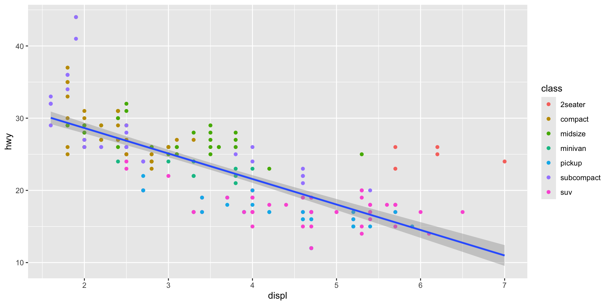
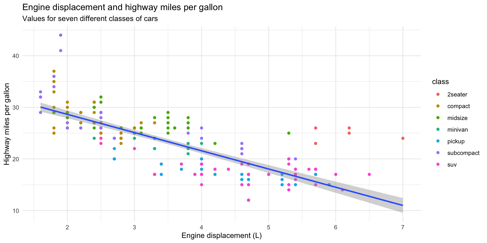
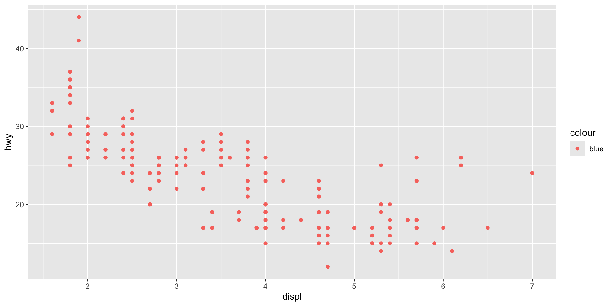

install.packages("tidyverse")Introducing R Through Data Visualization
Set up
To complete this session, you need to load in the following R packages:
Install packages
To install new R packages, run the following (excluding the packages you have already installed):
This section focuses on introducing you to some new R skills. You will learn how to create your own data visualizations using real-world data.
To guide this process, we will use data visualization to answer the following question:
Do cars with big engines use more fuel than cars with small engines?
Before we get started, answer the following questions:
- What do you think the answer to this question is?
- How would you prove your answer? What information about cars would you need?
Note
I borrow (read: steal) heavily from Hadley Wickham’s R4DSin this and other introductory R sessions. This is a fantastic resource for anyone learning R. I encourage you to use it if you ever get stuck.
Data visualization is a critical skill for data analysis. You can learn a lot more about your data, including the relationships buried within them, from plots than you can from looking at the raw numbers (and even from complicated statistical models). We will use data visualization throughout this course to learn about our data.
For example, we can answer our question above using the following plot:
ggplot(data = mpg, mapping = aes(x = displ, y = hwy)) +
geom_point(mapping = aes(colour = class)) +
geom_smooth(method = "lm") +
theme(
legend.position = "bottom",
panel.grid = element_blank(),
panel.background = element_blank(),
plot.title.position = "plot",
plot.title = element_text(face = "bold")
) +
labs(
title = "Engine displacement and highway miles per gallon",
subtitle = "Values for seven different classes of cars",
x = "Engine displacement (L)",
y = "Highway miles per gallon"
)We will now step through how to create this graph using R. During this explanation, you will be introduced to some fundamental elements of R.
Loading in and exploring your data
First, we need to load into our R session the R packages we will use. Today, we will be using the R packages contained within the tidyverse.
Tip
Always load your packages into your R session at the top of your R script. These scripts run from top to bottom. Loading necessary libraries in at the start ensures you don’t get annoying, missing package errors later on.
Next, we need to load in the data we will be using. The mpg data set (which includes lots of information on various car models) comes as part of the ggplot2 R package, which we loaded in with the tidyverse. You can access the data set by running the following:
mpg# A tibble: 234 × 11
manufacturer model displ year cyl trans drv cty hwy fl class
<chr> <chr> <dbl> <int> <int> <chr> <chr> <int> <int> <chr> <chr>
1 audi a4 1.8 1999 4 auto… f 18 29 p comp…
2 audi a4 1.8 1999 4 manu… f 21 29 p comp…
3 audi a4 2 2008 4 manu… f 20 31 p comp…
4 audi a4 2 2008 4 auto… f 21 30 p comp…
5 audi a4 2.8 1999 6 auto… f 16 26 p comp…
6 audi a4 2.8 1999 6 manu… f 18 26 p comp…
7 audi a4 3.1 2008 6 auto… f 18 27 p comp…
8 audi a4 quattro 1.8 1999 4 manu… 4 18 26 p comp…
9 audi a4 quattro 1.8 1999 4 auto… 4 16 25 p comp…
10 audi a4 quattro 2 2008 4 manu… 4 20 28 p comp…
# ℹ 224 more rows
Note
We will learn how to load your own data in later in the course.
This data set provides us with information on several different models of cars. Importantly, it includes information on each model’s engine size and average fuel use. We will use the following two variables to answer our question:
displ: engine displacement, in litreshwy: highway miles per gallon
Tip
You can learn more detail about this data set by running ?mpg from your console.
Engine displacement is a useful proxy for a car’s engine size. The larger its displacement, the larger the engine. Similarly, the number of gallons of fuel the car uses on the highway is a useful proxy for its fuel efficiency.
Returning to our question, do cars with big engines use more fuel than cars with small engines?, what is your hypothesis framed in terms of these two variables?
Here’s mine:
Cars with larger engines will travel fewer miles on the highway for each gallon of fuel used than cars with smaller engines.
Exercise
How many rows are in mpg? How many columns?
Check your answer
What does the drv variable describe?
Check your answer
Find the variable description by running the following:
?mpgPlotting your data
Next, we need to plot our data. We will use the ggplot2 package to do this. ggplot2 is a wonderfully intuitive and flexible data visualization tool. It is used widely.
ggplot2 works by building up data visualizations in layers. We will start with our blank canvas:
ggplot(data = mpg)
Here, we have run the ggplot() function. We have included one argument, data. This is the data frame that includes all the data we want to visualize.
Next, we need to let ggplot() know which variables we would like to visualize and where we would like them to go. We do this through ggplot()’s mapping argument:

ggplot() has now added some structure to our blank canvas. The displ variable is mapped onto the x-axis and the hwy variable is mapped to the y-axis. The mapping argument took a function, aes(), as its value. These are the aesthetics of your plot.
Next, we need to visualize each data point. We want to produce a scatter plot, so we will add the relevant `ggplot` geometric object to our plot:
ggplot(data = mpg, mapping = aes(x = displ, y = hwy)) +
geom_point()
All geometric objects start with geom_. Here are some examples:
geom_line()plots a line graphgeom_col()plots a column graphgeom_histogram()plots a histogram.
We now have a basic plot of our data. We can see a distinct relationship between a car’s engine size and its fuel use: cars with larger engines tend to travel fewer miles on the highway for each gallon of fuel than cars with smaller engines. This supports my hypothesis. Happy days!
We can even use ggplot() to visualize this general trend:
ggplot(data = mpg, mapping = aes(x = displ, y = hwy)) +
geom_point() +
geom_smooth(method = "lm")Here, I have used geom_smooth to add a line to my plot that summarizes the relationship between our two variables. I asked it to draw a straight line by setting the argument method to "lm" (which stands for linear model).
Note
We will talk a lot more about linear models during this course. Sit tight!
Although this general trend is interesting, I suspect there are some important differences in this relationship between the different classes of cars. We can quickly check if this is the case by adding a visual cue of those different classes to our plot:
First, I will colour each car’s data point based on its class:
ggplot(data = mpg, mapping = aes(x = displ, y = hwy, colour = class)) +
geom_point()Note that I have introduced a new aesthetic to the model: colour. In doing so, I have told ggplot() to vary each data point’s colour based on its class. Each car is classified into one of the following seven classes:
# A tibble: 7 × 1
class
<chr>
1 compact
2 midsize
3 suv
4 2seater
5 minivan
6 pickup
7 subcompact
Note
I, an Australian, am not afraid of my “u”s. Nor, is R! Both American English and “ahem” ~ proper ~ English work in R. For example, you can substitute my colour for color.
We can extend this grouping to all of our layers:
ggplot(data = mpg, mapping = aes(x = displ, y = hwy, colour = class)) +
geom_point() +
geom_smooth(method = "lm")Simiarly, we can isolate which aesthetics apply to which layers by moving the aes() mapping from ggplot() to the specific layer to which we would like to apply it. Remember, ggplot2 is very flexible!
ggplot(data = mpg, mapping = aes(x = displ, y = hwy)) +
geom_point(aes(colour = class)) +
geom_smooth(method = "lm")
Note
All aesthetics supplied to the top ggplot() function will be inherited by the layers that proceed it unless you specify otherwise.
Exercise
Make a scatter plot of hwy vs cyl.
Check your answer
ggplot(mpg, mapping = aes(x = hwy, y = cyl)) +
geom_point()What happens if you make a scatter plot of class vs drv? Why is the plot not useful?
Check your answer
Scatter plots are best used to visualize the relationship between two continuous variables. These variables have an inherent order to them, allowing us to see how the relationship changes as each grows or shrinks. class and drv are unordered categorical variables, so their order in relation to each other is not meaningful.
ggplot(mpg, mapping = aes(x = class, y = drv)) +
geom_point()Why does the following give an error and how would you fix it?
ggplot(data = mpg) +
geom_point()
Check your answer
Always read error messages carefully. They often tell you - in plain language - what the problem is and how to fix it. Here, we can see that “geom_point() requires the following missing aesthetics: x and y”. So, to fix it, we need to supply those aesthetics. For example:
ggplot(mpg, mapping = aes(x = hwy, y = cyl)) +
geom_point()
Styling your plot
You have now learnt how to plot your data using ggplot2. However, the default styling leaves a little to be desired. We will now learn how to personalize your plots.
First, we need to add some more information to our plot to make it easier to interpret. We will start with some more useful labels:
ggplot(data = mpg, mapping = aes(x = displ, y = hwy)) +
geom_point(mapping = aes(colour = class)) +
geom_smooth(method = "lm") +
labs(
title = "Engine displacement and highway miles per gallon",
subtitle = "Values for seven different classes of cars",
x = "Engine displacement (L)",
y = "Highway miles per gallon"
)Next, we want to adjust what our plots look like. You can do this to highlight certain elements of your data:
ggplot(data = mpg, mapping = aes(x = displ, y = hwy)) +
geom_point(mapping = aes(color = class == "2seater")) +
geom_smooth(method = "lm") +
labs(
title = "Engine displacement and highway miles per gallon",
subtitle = "Values for seven different classes of cars",
x = "Engine displacement (L)",
y = "Highway miles per gallon"
)Or to simply make the graph more appealing to look at:
ggplot(data = mpg, mapping = aes(x = displ, y = hwy)) +
geom_point(colour = "pink") +
geom_smooth(method = "lm") +
labs(
title = "Engine displacement and highway miles per gallon",
subtitle = "Values for seven different classes of cars",
x = "Engine displacement (L)",
y = "Highway miles per gallon"
)
Less is often more when it comes to data visualization. Your audience will find it easier to learn about the relationships you want to highlight when your plot is not cluttered with stylistic elements.
We can easily strip away a lot of the default ggplot() styling using the theme_minimal() function:
ggplot(data = mpg, mapping = aes(x = displ, y = hwy)) +
geom_point(mapping = aes(colour = class)) +
geom_smooth(method = "lm") +
theme_minimal() +
labs(
title = "Engine displacement and highway miles per gallon",
subtitle = "Values for seven different classes of cars",
x = "Engine displacement (L)",
y = "Highway miles per gallon"
) 
There are many preset ggplot2 themes available. You can check them out in the ggplot documentation.
Like any R function, the ggplot2 theme_X() series of functions are running a more verbose set of R code in the background. You can add in this code directly using the theme() function to control the look of your plot. For example, here are some things I commonly do to my plots:
ggplot(data = mpg, mapping = aes(x = displ, y = hwy)) +
geom_point(mapping = aes(colour = class)) +
geom_smooth(method = "lm") +
theme(
legend.position = "bottom",
panel.grid = element_blank(),
panel.background = element_blank(),
plot.title.position = "plot",
plot.title = element_text(face = "bold")
) +
labs(
title = "Engine displacement and highway miles per gallon",
subtitle = "Values for seven different classes of cars",
x = "Engine displacement (L)",
y = "Highway miles per gallon"
) 
Here, I have:
Moved the legend to the bottom of the plot
Removed the grid lines
Removed the grey shading behind the plot
Pulled the plot title closer to the edge of the plot
Made the plot title bold.
You can see the many, many different elements of a ggplot2 plot you can control by looking over the theme() function’s documentation:
?themeExercises
What has gone wrong with this code? Why are the points not blue?
ggplot(data = mpg) +
geom_point(mapping = aes(x = displ, y = hwy, color = "blue"))
Check your answer
Placing the color = "blue" argument in the aes() means that geom_point() will treat "blue" as a variable, not as a value. We need to move it out of aes() and make it a stand-alone argument of geom_point():
ggplot(data = mpg) +
geom_point(mapping = aes(x = displ, y = hwy), color = "blue")Name a categorical variable in mpg. Name a continuous one.
Check your answer
Categorical
manufacturermodeltransdrvflclass
Continuous
displyearcylctyhwy
Map a continuous variable to color. How does this aesthetics behave differently for categorical vs. continuous variables?
Check your answer
ggplot() will adapt to create a continuous colour palette for a continuous variable.
ggplot(mpg, aes(x = displ, y = hwy, colour = cyl)) +
geom_point()Map class to the shape aesthetic. What does the warning tell you?
Check your answer
This warning lets us know that ggplot() can plot up to six different unique values under the shape argument. Our data include seven unique values. One (suv) is being dropped out of the visualization.
Working with categorical data
So far, we have looked at plotting the relationship between two continuous variables. We need different plot types to visualize categorical data.
First, let’s take a look at some categorical variables in our mpg data set:
# A tibble: 234 × 3
manufacturer model drv
<chr> <chr> <chr>
1 audi a4 f
2 audi a4 f
3 audi a4 f
4 audi a4 f
5 audi a4 f
6 audi a4 f
7 audi a4 f
8 audi a4 quattro 4
9 audi a4 quattro 4
10 audi a4 quattro 4
# ℹ 224 more rowsHere, we have information on each car’s manufacturer, its model name, and its drive train type (front-wheel, rear-wheel, or four-wheel drive).
What is the most popular drive train type among our sample of car models? We can quickly answer this question by visualizing the count of the number of different models in each drive train type:
It looks like front-wheel drives (f) are just the most popular type, quickly followed by four-wheel drives. We can reorder our x-axis to follow this ranking:
ggplot(mpg, aes(x = fct_infreq(drv))) +
geom_bar()
Counts of our data can be very helpful for getting a sense of what is common (or not) among them. For example, I can use a histogram (which plots counts of the number of observations within bins of continuous variables) to see how my variable is distributed across all the range of its values. Here is that distribution for one of our continuous variables above, highway miles per gallon:
ggplot(mpg, aes(x = hwy)) +
geom_histogram()From this histogram, we learn that the car models in our sample tend to do between roughly 15 to 30 highway miles per gallon of fuel. A small number of cars are more efficient (can do up to over 40 miles with that one gallon). Similarly a small number of cars are very inefficient (only getting around 12 miles with that gallon).
We can get a similar, if cleaner, sense of this shape using a density plot:
ggplot(mpg, aes(x = hwy)) +
geom_density()
This density plot is showing the same data as the histogram, but it presents a smoother picture. This can often allow us to focus more easily on the shape of the distribution of our data. However, it can gloss over some important details in that distribution. For example, we get less of a sense of the trough (or low point) immediately after 20 miles per gallon in the density plot compared to the histogram.
We can also use these data visualizations to easily compare data. For example, here is the distribution of highway miles per gallon for cars according to their drive train type:
ggplot(mpg, aes(x = hwy, colour = drv, fill = drv)) +
geom_density(alpha = 0.5)
Note
The colour aesthetic controls the thin outline of the density plot. Adding the fill aesthetic makes the groups easier to see. geom_density()’s alpha argument controls the transparency of each density plot.
Exercise
Plot the number of observations in each category of a categorical variable in the mpg data set. Make sure to use an appropriate graph type.